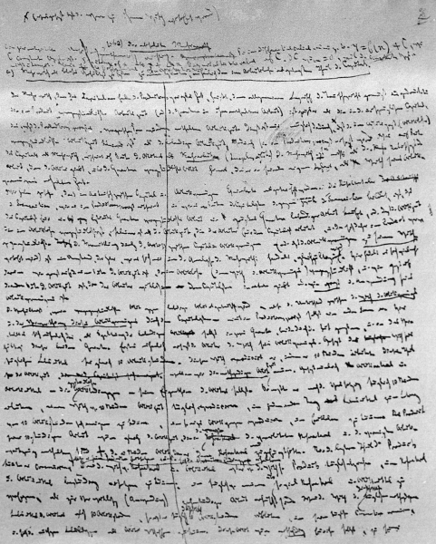
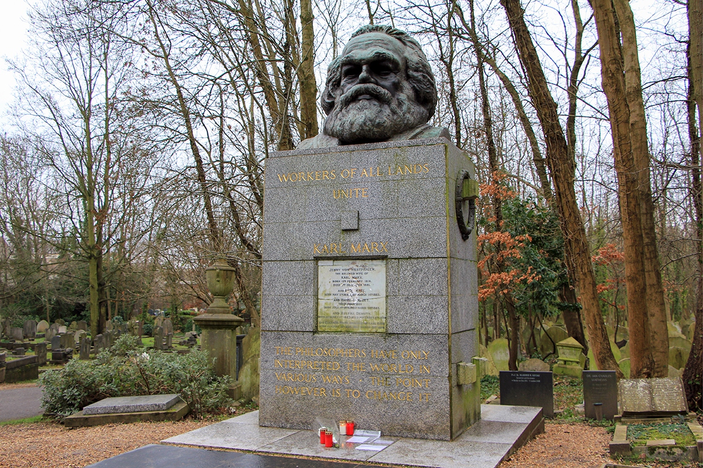

«Каждый из нас действительно делает себя тем, чем он является в глазах другого.»
Карл Маркс (1818 - 1883)
Биография
Юность
Карл Маркс был третьим ребёнком в семье трирского адвоката еврейского происхождения Генриха Маркса (1777—1838), происходившего из рода раввинов . Родился в Трире по адресу Брюккергассе/Brückergasse, 664 (теперь Brückenstraße, 10 — музей). 15 октября 1819 года их семья переехала в новый дом по адресу Симеонштрассе/Simeonstraße, 8 (теперь на этом месте установлена памятная плита).
Мать — Генриетта Маркс, урожд. Прессбург (или Пресборк, нем. Henrietta Pressburg, нидерл. Henrietta Presborck) (1787—1863), происходила из г. Нимвегена (современный Неймеген, Нидерланды) из семьи раввинов.
Незадолго до рождения Карла, в 1817 году его отец принял христианство (лютеранство), чтобы не лишиться звания судебного советника. Его дети, в том числе сын Карл, крестились в 1824 году, жена приняла христианство в том же 1824 году, после смерти её родителей, которые, как семья раввинов, были против такого шага.
В 1830—1835 годах Карл посещал гимназию Фридриха-Вильгельма (Friedrich-Wilhelm-Gymnasium) города Трир, которую закончил в 17-летнем возрасте. В гимназическом сочинении «Размышления юноши при выборе профессии» в 1835 г. Карл Маркс написал: Если человек трудится только для себя, он может, пожалуй, стать знаменитым учёным, великим мудрецом, превосходным поэтом, но никогда не сможет стать истинно совершенным и великим человеком. Окончив гимназию в Трире c хорошими отметками по немецкому, латинскому, греческому и французскому языкам, математике, Маркс поступил в университет, сначала в Боннский, где проучился два семестра, потом в Берлинский, где изучал юридические науки, историю, историю искусств и философию.
В 1837 году тайно обручился с Женни фон Вестфален (нем. Jenny von Westphalen), 1814 года рождения, происходившей из аристократического рода, которая позже стала его женой. Женни была подругой его старшей сестры Софи.
Период до 1849 года
Период до 1849 года В 1839 году Карл Маркс написал работу «Тетради по истории эпикурейской, стоической и скептической философии». В 1841 году Карл Маркс окончил Берлинский университет экстерном, представив докторскую диссертацию под названием «Различие между натурфилософией Демокрита и натурфилософией Эпикура». Диссертацию он защитил в Йенском университете из-за материальных трудностей её защиты в Берлинском университете[11][12][28].
По своим взглядам Маркс был тогда гегельянцем-идеалистом. В Берлине он примыкал к кружку младогегельянцев (Бруно Бауэр и др.), которые были склонны делать атеистические и революционные выводы из философии Гегеля. Позднее уже 40-летний Маркс писал Энгельсу: «По части метода обработки материала большую услугу оказало мне то, что я по чистой случайности перелистал „Логику“ Гегеля, — Фрейлиграт нашёл несколько томов Гегеля, принадлежавших прежде Бакунину, и прислал мне их в подарок. Если когда-нибудь снова наступит время для подобных работ, я охотно изложу на двух — трёх печатных листах в доступной обыкновенному человеческому рассудку форме то рациональное, что есть в методе, который Гегель открыл, но в то же время и мистифицировал».
По окончании университета Маркс переселился в Бонн, рассчитывая стать профессором.
Он собирался преподавать вместе с Б. Бауэром философию в Боннском университете, проектировал издание при участии Людвига Фейербаха журнала под названием «Архив атеизма», хотел писать работу о христианском искусстве. Но реакционная политика правительства и семья заставили Маркса отказаться от учёной карьеры. В это время рейнские радикальные буржуа, имевшие точки соприкосновения с левыми гегельянцами, основали в Кёльне оппозиционную газету «Rheinische Zeitung[de]» (начала выходить 1 января 1842 года).
В 1842—1843 годах Карл Маркс работал журналистом и редактором этой газеты, зарабатывая 500 талеров. Вначале Маркс высказывался за отмену цензуры, затем перешёл к открытой критике правительства (многие его статьи были либо запрещены цензурой, либо подвергались жёсткой правке).
В ходе написания серии статей «Оправдание мозельского корреспондента» Маркс осуществил конкретно-социальное исследование: собрал официальные документы, материалы печати, личные документы, данные опросов. В этих и других своих, опубликованных к началу января 1843 года статьях, Маркс почти открыто призывал к революционному свержению прусской монархии и замене её демократией.
Это переполнило чашу терпения правительства, и в марте 1843 года газету закрыли. Маркс ещё раньше был вынужден оставить должность редактора, но и его уход не спас газету. Работа в газете показала Марксу, что он недостаточно знаком с политической экономией, поэтому он усердно принялся за её изучение, продолжая работать журналистом.
В июне 1843 года в Кройцнахе Маркс венчался с Женни фон Вестфален.
Летом 1843 года Маркс написал работу «К критике гегелевской философии права», посвящённую критике идеалистических взглядов Гегеля на общество[38].
После попытки прусского правительства подкупить Маркса, предложив ему перейти на прусскую государственную службу, под угрозой ареста молодая семья переезжает в Париж в конце октября 1843 года, где Маркс подружился с Генрихом Гейне и Фридрихом Энгельсом[39]. С последним его до конца жизни связывали узы дружбы и совместная работа. Именно Энгельс обратил внимание Маркса на положение рабочего класса.
В Париже Маркс вступил в непосредственный контакт с рабочими организациями, как французов, так и немецких эмигрантов, познакомился с П. Ж. Прудоном, русскими эмигрантами М. А. Бакуниным, В. П. Боткиным. Он завязал широкие знакомства с французскими радикальными кругами, с представителями революционных кругов различных стран, жившими в Париже.
В 1844 году совместно с Арнольдом Руге выпускает единственный сдвоенный номер журнала «Немецко-французский ежегодник», после издания которого расходится с Руге из-за политических взглядов.
В апреле-августе 1844 года Маркс написал «Экономически-философские рукописи 1844 года».
28 августа 1844 года Маркс познакомился с немецким социалистом Фридрихом Энгельсом в Кафе де ля Режанс; они стали друзьями на всю жизнь.
В начале февраля 1845 года Маркс был выслан из Парижа и переехал в Брюссель (куда приехал и Энгельс). В Брюсселе Маркс и Энгельс написали работу «Немецкая идеология», в которой выступили с критикой идей Гегеля и младогегельянцев. Весной 1847 года Маркс и Энгельс примкнули к тайному пропагандистскому обществу, международной организации «Союз справедливых» (был преобразован в «Союз коммунистов»), организованной немецкими эмигрантами. По поручению общества они составили программу коммунистической организации — знаменитый «Манифест коммунистической партии», опубликованный 21 февраля 1848 года в Лондоне.
После начала февральской революции 1848 года Маркс был выслан из Бельгии. Он вернулся в Париж, а после мартовской революции переехал в Германию, в Кёльн. Там ему удалось в короткие сроки совместно с Энгельсом организовать выпуск большой ежедневной революционной газеты «Neue Rheinische Zeitung». Первый номер газеты вышел 1 июня 1848 года. В редакционный комитет газеты вошли: Карл Маркс — главный редактор, Генрих Бюргерс[de], Эрнст Дронке[de], Фридрих Энгельс, Георг Веерт, Фердинанд Вольф[de], Вильгельм Вольф — редакторы. Состав редакции определял характер газеты как направляющего и организующего органа Союза коммунистов. «Neue Rheinische Zeitung» ставила своей целью представлять читателям глубокий анализ важнейших революционных событий в Германии и Европе. Газета прекратила своё существование после поражения майских восстаний 1849 года в Саксонии, Рейнской Пруссии и Юго-Западной Германии и начавшихся репрессий против её редакторов. 19 мая 1849 года вышел последний номер, отпечатанный красной краской.
Первая страница из рукописи К. Маркса и Ф. Энгельса «Немецкая идеология».
Лондонская эмиграция
Карл Маркс был выслан из Германии 16 мая 1849 года и со своей семьёй сначала отправился в Париж, но после демонстрации 13 июня 1849 года был выслан и оттуда. В конечном счёте Маркс с семьёй переехал в Лондон, где жил до самой смерти и создал свои главные экономические произведения, включая «Капитал».
Условия эмигрантской жизни были крайне тяжелы, Маркс с семьёй жил исключительно за счёт постоянной финансовой поддержки Энгельса, небольших наследств от родственников и случайных заработков от написания статей в газеты. В одном из писем с просьбой о денежной помощи Маркс пишет: «Женни больна. Моя дочь Женни больна. У меня нет денег ни на врача, ни на лекарства. В течение 8-10 дней семья питалась только хлебом и картофелем. Диета не слишком подходящая в условиях здешнего климата. Мы задолжали за квартиру. Счета булочника, зеленщика, молочника, торговца чаем, мясника — все не оплачены». Историк Н. И. Басовская отмечает, что в условиях крайней нужды Маркс сделал попытку продать некоторые предметы из семейного серебра фон Вестфален, но был задержан полицией, подозревавшей его в воровстве, и благополучно вызволен своей женой Женни.
В 1850-х годах Маркс приступил к систематической разработке своей экономической теории, интенсивно занимался в библиотеке Британского музея. Наряду с изучением политической экономии, социальной философии, права и других социальных наук, Маркс осваивал огромный фактический материал различных научных дисциплин (вплоть до математики, агрохимии и минералогии).
Первая страница из рукописи К. Маркса и Ф. Энгельса «Немецкая идеология». Предисловие
В Лондоне Маркс вёл активную общественную деятельность. В 1864 году он организовал «Международную рабочую ассоциацию» (International Workingmen’s Association, позднее переименована в Первый Интернационал) — первую массовую международную (секции этого товарищества рабочих были образованы в большинстве стран Европы и в США) организацию рабочего класса. Вначале организация состояла из анархистов, британских тред-юнионистов, французских социалистов и итальянских республиканцев. Позже острые разногласия между Марксом и лидером анархистов Михаилом Бакуниным о сути коммунистического общества и пути его достижения привели к разрыву с анархистами, которые на Гаагском конгрессе в сентябре 1872 года были изгнаны из организации. В 1872 году, после разгрома Парижской коммуны и в условиях нарастающей реакции, Первый Интернационал переехал в Нью-Йорк, однако 4 года спустя в 1876 году он был распущен на Филадельфийской конференции. Все попытки восстановления организации на протяжении последующих 5 лет не увенчались успехом. Однако Второй Интернационал, в который входили левые партии Англии, Франции, Германии, Испании и многих других стран Европы, был учреждён через 6 лет после смерти Маркса, в 1889 году, как преемник Первого Интернационала.
Последние годы и смерть
Могила Карла Маркса на Хайгейтском кладбище в Лондоне.
В мае 1867 года вышел в свет первый том «Капитала».
После смерти жены Женни в декабре 1881 года, у Маркса развился катар, которым он проболел последние 15 месяцев жизни. Катар в итоге привёл к бронхиту, плевриту и абсцессу правого лёгкого, от которого Маркс скончался в Лондоне 14 марта 1883 года в возрасте 64 лет. Он умер апатридом. Лондонские родные и друзья похоронили его тело на Хайгейтском кладбище в Лондоне 17 марта 1883 года в той же могиле, в которой за пятнадцать месяцев до этого была погребена его жена. На его похоронах присутствовало от девяти до одиннадцати человек.
В связи со смертью Маркса Энгельс в телеграммах и письмах ближайшим друзьям и соратникам говорит о Марксе как о гениальном теоретике и вожде мирового пролетариата. «Величайший ум второй половины нашего века перестал мыслить», — писал Энгельс Вильгельму Либкнехту 14 марта 1883 года. «… Этот гениальный ум перестал обогащать своей мощной мыслью пролетарское движение обоих полушарий. Ему мы обязаны всем тем, чем мы стали; и всем, чего теперь достигло современное движение, оно обязано его теоретической и практической деятельности; без него мы до сих пор блуждали бы ещё в потёмках».
2-й (1885) и 3-й (1894) тома «Капитала» были изданы Энгельсом после смерти Маркса, который, готовя их к печати, писал: «Я работаю над неструктурированными рукописями второго, третьего тома „Капитала“, я почти ничего не понимаю, работаю с трудом».
Философия
Карл Маркс совместно с Фридрихом Энгельсом создали систему марксисткой философии в середине 19-го века. Философия Карла Маркса базировалась на политэкономических исследованиях, социальных и культурных проблемах, которые вылились в такое философское течение, как научный коммунизм, а также на этической проблематике.
Философия Карла Маркса носит материалистический характер. Не обошлось без дополнений, поэтому философию, которую основал Карл Маркс в течении материализма, принято считать материалистическо-диалектического. Кроме того, Карл Маркс ввел ряд нововведений: исторический материализм – никто до него не изучал прогрессию материалистической культуры (проявляется она в смене формаций) – но рассматривается он только, как часть диалектического материализма, а не отдельно функционирующие философские взгляды.
Суть философии Маркса заключалась социальной стратификации общества. Согласно его учению, люди, вступающие в общение, образуют определенные классы, или группы, по интересам – производственные отношения. производственные отношения могут выявляться как между служащими из одного ранга, так и в критерии подчиненный-начальник. В этом плане характеристикой подчиненного или рабочего выступает его труд. Карл Маркс ввел понятие отчуждение труда, что означает – результат работы человека не достается ему, он разъединён с продуктом своего труда, а значит отчужден от труда.
Существующие производственные отношения порождают экономику общества. Экономика является базисом для общественной структуры, то есть для институтов общества, порождаемых ими общественных отношений. Именно эти институты и общественные отношения называются понятием «надстройки» в философии Карла Маркса. Базис и надстройка поддаются взаимному влиянию друг друга.
С помощью труда преобразовывается и сам человек. Он развивается, поэтому практика настолько ценна и полезна в качестве движущей силы. Отчуждение труда, которое происходит сплошь и рядом, необходимо преодолеть, по мнению Карла Маркса, тогда человек не будет чувствовать себя потерянным, неполноценным. Труд принадлежит человеку, который его создал, а не тем конгломератам, которые забирают и поглощают результат труда простого рабочего. Развитие человека в рамках философских воззрений Карла Маркса является диалектическим: на единстве противоположностей, перехода от количества в качество (труд) строится и развивается понятие человека и, как следствие, производственных отношений, а значит и всего базиса, который влияет на надстройку.